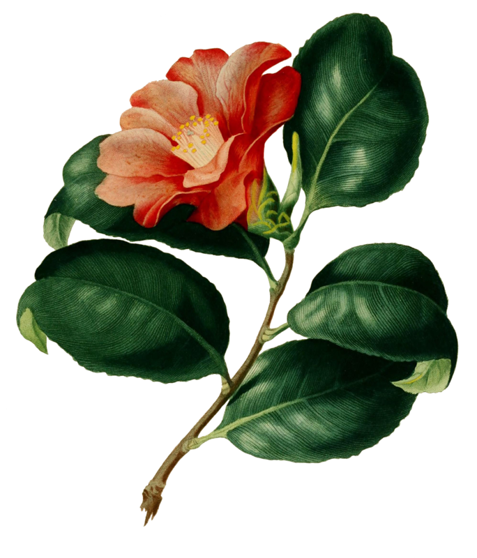
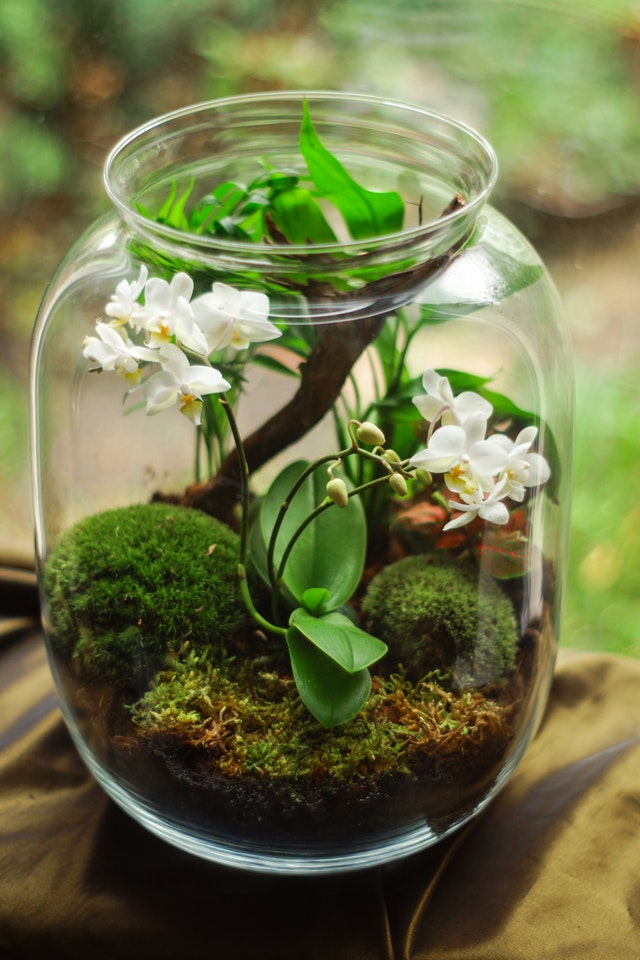
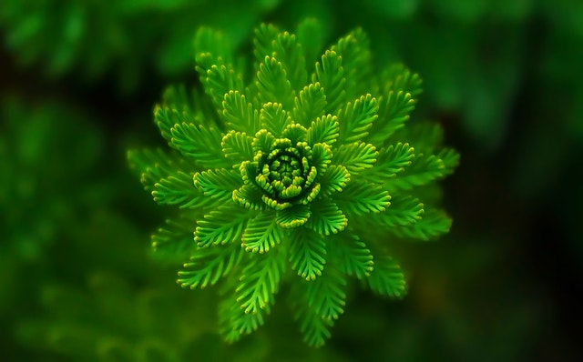

La necesidad de alimentarse y la curiosidad por la naturaleza llevaron al hombre a preocuparse por diferenciar plantas comestibles de venenosas, y tratar de conocer y aprovechar semillas, frutos, flores, tallos, hojas y raíces. La botánica es la ciencia que estudia los vegetales. El análisis de éstos parece ser casi tan antiguo como el hombre mismo.
Historia
La Civilización china fue la primera en asentar sus conocimientos botánicos por escrito, unos 4000 años antes de Cristo. Entre los griegos, Empédocles descubrió la función de la raíz como medio de sostén y órgano de alimentación de la planta, y Aristóteles asoció el fruto con la reproducción de la especie. Durante el Renacimiento, los estudios al respecto Experimentaron grandes progresos. Fue en esa época que surgieron los primeros jardines botánicos: Colecciones sistemáticas de plantas vivas. Con la clasificación del naturalista sueco Carl Von Linné, en el siglo XVIII, nació la nomenclatura actual.
Las distintas Ramas
La botánica tiene varias ramas: la paleobotánica estudia los restos vegetales fósiles; la geobotánica trata sobre la distribución de la flora en las distintas áreas del planeta; la botánica pura ordena y clasifica las plantas; y la aplicada estudia las características de las plantas en relación con su empleo por el hombre. Ya en terrenos más específicos, la citología vegetal se ocupa de las células; la histología, delos tejidos; la embriología, del desarrollo y las transformaciones del embrión; la morfología, de las estructuras internas y del aspecto exterior de los órganos de la planta; la fisiología –disciplina netamente experimental- se ocupa de la nutrición y la reproducción de vegetales, y la botánica descriptiva agrupa y cataloga todos los descubrimientos. La botánica también tiene estrecha relación con otras ciencias como la geografía, la paleontología y la química, que resultan útiles para ampliar y profundizar sus conceptos

Células
La célula es la mínima unidad morfológica y fisiológica que compone los tejidos de plantas y animales. Constituye la menor expresión de vida, ya que nace, se alimenta, crece, se reproduce y muere. Su estructura consta de una masa gelatinosa, granulada y transparente, el protoplasma, rodeada por una cubierta muy delgada que se denomina membrana celular. La existencia de una pared, compuesta por celulosa, es típica de las células vegetales. En el protoplasma se distinguen el citoplasma y el núcleo. El primero contiene agua y elementos químicos precursores de proteínas, líquidos y glúcidos, además de varios corpúsculos con una función determinada para cada uno. Rodeado por el citoplasma se encuentra el núcleo, que está recubierto por la membrana nuclear y contiene pequeñas partículas de proteínas llamadas nucléolos. Es en él donde se encuentran los cromosomas, filamentos de ácido desoxirribonucleico (ADN), portadores de códigos de información genética que determinan las características específicas de cada individuo.
Clasificacion

El estudio del reino vegetal requiere d un método para clasificar las distintas formas de vida. La clasificación en uso es la de Carl von Linné, que se basa tanto en los rasgos visibles de la planta como en las características específicas de su estructura. Según esos criterios, todas las plantas se agrupan en dos grandes divisiones: las inferiores y las superiores. La característica que las distingue radica en que las inferiores no poseen flor ni semilla, mientras que las superiores sí.
alimentación

El proceso comienza cuando riegas la planta. El agua disuelve los compuestos inorgánicos presentes en el sustrato, haciéndolo más accesible para la planta. Los pelos absorbentes de las raíces de la planta toman las sustancias nutritivas y sales minerales, mezclándolos y creando la savia bruta. La savia bruta sube por los vasos leñosos, unos tubos muy finos que recorren la planta como si fueran venas y arterias.
Las hojas de la planta tiene pequeños poros que se llaman estomas. A través de los estomas entra el dióxido de carbono que se mezcla con la savia bruta y comienza el proceso de fotosíntesis, que es como se crea la savia elaborada y el oxígeno.
La fotosíntesis requiere la luz solar, que es captada por la clorofila, una sustancia presente en las hojas de las plantas y que les da su color verde característico, tal como la concentración de melanina otorga el color a la piel humana. Como subproducto del proceso de fotosíntesis, la planta libera oxígeno, que es lo que usamos los humanos para poder respirar. Es por esta razón que se suele llamar a los bosques y selvas ‘pulmones vegetales’, pues son los responsables de crear el oxígenos que respiramos.
Una vez se ha creado la savia elaborada a través de la fotoíntesis en las hojas, esta se reparte en toda la planta a través de los vasos liberianos, alimentando todas las secciones de la planta, incluyendo los tallos leñosos.
{kind=link}